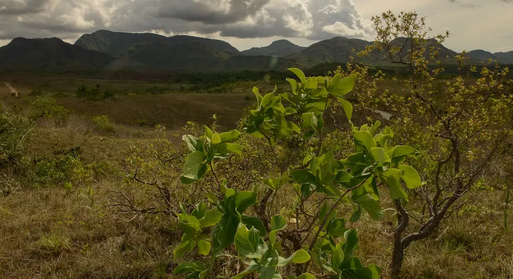

Ipê Amarelo
Nome Botânico: Tabebuia chrysotricha Standl
Nomes Populares: ipê amarelo
Família: Família Bignoniaceae
Origem: Brasil, nos estados do Espírito Santo até o sul do país
Uma das árvores mais bonitas em paisagismo urbano pela sua bela e exuberante floração. Pode ser cultivada nas ruas e parques e também em jardins empresariais, para condomínios e residências, com grande sucesso ornamentalip amarelo. No planejamento de jardins é preciso não esquecer que sua floração dura pouco tempo, e seu uso como atração principal na primavera deve ter boa combinação com as outras plantas.